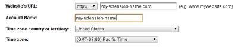
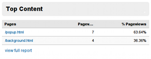
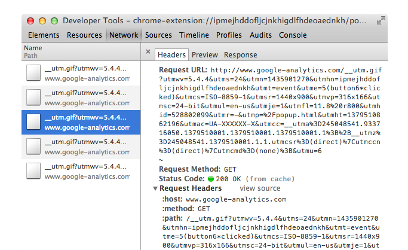
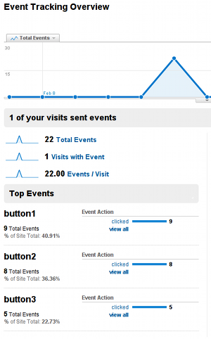

Except as otherwise noted, the content of this page is licensed under the Creative Commons Attribution 3.0 License, and code samples are licensed under the BSD License.
©2013 Google
This tutorial demonstrates using Google Analytics to track the usage of your extension. If you are developing a platform app, see Analytics for Apps since apps have different restrictions from extensions.
This tutorial expects that you have some familiarity writing extensions for Google Chrome. If you need information on how to write an extension, please read the Getting Started tutorial.
You will also need a Google Analytics account set up to track your extension. Note that when setting up the account, you can use any value in the Website's URL field, as your extension will not have an URL of its own.

The standard Google Analytics tracking code snippet fetches a file named
ga.js from an SSL protected URL if the current page
was loaded using the https:// protocol. Chrome
extensions and applications may only use the SSL-protected version of
ga.js. Loading ga.js over insecure HTTP is
disallowed by Chrome's default Content
Security Policy. This, plus the fact that Chrome extensions are hosted
under the chrome-extension:// schema, requires a slight
modification to the usual tracking snippet to pull ga.js directly
from https://ssl.google-analytics.com/ga.js instead of the
default location.
Below is a modified snippet for the asynchronous tracking API (the modified line is bolded):
(function() {
var ga = document.createElement('script'); ga.type = 'text/javascript'; ga.async = true;
ga.src = 'https://ssl.google-analytics.com/ga.js';
var s = document.getElementsByTagName('script')[0]; s.parentNode.insertBefore(ga, s);
})();
You'll also need to ensure that your extension has access to load the resource
by relaxing the default content security policy. The policy definition in your
manifest.json might look like:
{
...,
"content_security_policy": "script-src 'self' https://ssl.google-analytics.com; object-src 'self'",
...
}
Here is a popup page (popup.html) which loads the asynchronous
tracking code via an external JavaScript file (popup.js) and
tracks a single page view:
<!DOCTYPE html> <html> <head> ... <script src="popup.js"></script> </head> <body> ... </body> </html>
var _gaq = _gaq || [];
_gaq.push(['_setAccount', 'UA-XXXXXXXX-X']);
_gaq.push(['_trackPageview']);
(function() {
var ga = document.createElement('script'); ga.type = 'text/javascript'; ga.async = true;
ga.src = 'https://ssl.google-analytics.com/ga.js';
var s = document.getElementsByTagName('script')[0]; s.parentNode.insertBefore(ga, s);
})();
Keep in mind that the string UA-XXXXXXXX-X should be replaced
with your own Google Analytics account number.
The _gaq.push(['_trackPageview']); code will track a single
page view. This code may be used on any page in your extension. When
placed on a background page, it will register a view once per browser
session. When placed on a popup, it will register a view once every time
the popup is opened.
By looking at the page view data for each page in your extension, you can get an idea of how many times your users interact with your extension per browser session:

To ensure that tracking data from your extension is being sent to Google Analytics, you can inspect the pages of your extension in the Developer Tools window (see the debugging tutorial for more information). As the following figure shows, you should see requests for a file named __utm.gif if everything is set up correctly.

By configuring event tracking, you can determine which parts of your extension your users interact with the most. For example, if you have three buttons users may click:
<button id='button1'>Button 1</button> <button id='button2'>Button 2</button> <button id='button3'>Button 3</button>
Write a function that sends click events to Google Analytics:
function trackButton(e) {
_gaq.push(['_trackEvent', e.target.id, 'clicked']);
};
And use it as an event handler for each button's click:
var buttons = document.querySelectorAll('button');
for (var i = 0; i < buttons.length; i++) {
buttons[i].addEventListener('click', trackButtonClick);
}
The Google Analytics event tracking overview page will give you metrics regarding how many times each individual button is clicked:

By using this approach, you can see which parts of your extension are under-or-overutilized. This information can help guide decisions about UI redesigns or additional functionality to implement.
For more information about using event tracking, see the Google Analytics developer documentation.
A sample extension that uses these techniques is available in the Chromium source tree:
.../examples/tutorials/analytics/